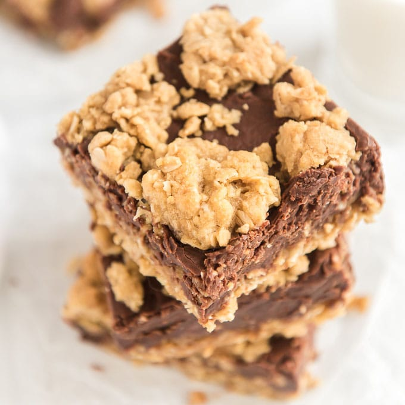

Indoor S'mores

Ingredients
- 8 cups (13-ounce box) graham cracker cereal
- 6 cups (10.5-ounce bag) miniature marshmallows, divided
- 1 1/2 cups (9 ounces) NESTLÉ® TOLL HOUSE® Milk Chocolate Morsels
- 5 tbsp butter or margarine, cut into pieces
- 1/4 cup light corn syrup (optional)
- 1 tsp vanilla
Directions
- Grease 13 x 9-inch baking pan. Pour cereal into large bowl.
- Heat 5 cups marshmallows, morsels, butter and corn syrup in medium, heavy-duty saucepan over low heat, stirring constantly until smooth. Remove from heat. Stir in vanilla extract.
- Pour marshmallow mixture over cereal; stir until well coated. Stir in remaining marshmallows. Press mixture into prepared pan. Refrigerate for 1 hour or until firm. Cut into bars.
Microwave Method
- Microwave 5 cups marshmallows, morsels, butter and corn syrup in large, microwave-safe bowl on HIGH (100%) power for 2 to 3 1/2 minutes, stirring every minute, until smooth. Stir in vanilla extract. Proceed as above.
Oatmeal Fudge Bars
Ingredients
Fudge
- 1(12 oz)pkg chocolate chips
- 1(14 oz)can sweetened condensed milk
- 3 tbsp butter
- 2 tsp vanilla
Oatmeal Cookie
- 1 1/2 cups brown sugar
- 1 cup butter
- 1 tbsp vanilla
- 1 tsp salt
- 2 eggs
- 1 tsp baking soda
- 2 cups flour
- 3 cups old fashion oats
Directions
Preheat oven to 350°F
- Melt first three ingredients(chips, milk, butter) together. Remove from heat; add vanilla. Set aside.
- Mix butter, brown sugar, vanilla, salt, and eggs together. Add soda and flour.
- Stir in oats by hand. Pat 2/3 of oatmeal mixture on to pan.
- Pour melted chocolate filling on top.
- Sprinkle remaining oatmeal mixture on top.
- Bake for 20 to 25 minutes
Peppermint Oreo Dessert

Ingredients
- 1 pkg gf Oreos (usually better not double stuffed or you can use an Oreo pie crust)
- 1 big cool whip
- 1 10oz bag of mini marshmallow
- 12 crushed peppermint Candy Canes
Directions
- Crush Oreos and mix with 3 - 4 tbs melted butter
- Press in 9x13 cake pan
- Refrigerate over night
- Mix cool whip, crushed candy canes, and marshmallows together and dump in Oreo crust